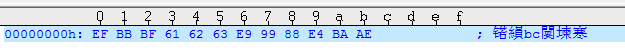

我保存了一个文件Edit3，内容是abc陈亮，用UltraEdit保存的时候，用的选项是UTF-8.  然后用程序：
#includeint main(void) { FILE *fptr; char ch_buffer[1]; if ((fptr = fopen("c:\\users\\lchen4\\desktop\\temp\\Edit3", "r")) == NULL) { printf("file read error"); exit(1); } while(!feof(fptr)) { fread(ch_buffer, sizeof ch_buffer, 1, fptr); printf("%x..", ch_buffer[0]); } fclose(fptr); }
前三个byte的BOM Header是UTF-8特定的三个byte：EFBBBF，但是跑的时候结果是： C:\Users\lchen4\Desktop\temp>a.exe ffffffef..ffffffbb..ffffffbf..61..62..63..ffffffe9..ffffff99..ffffff88..ffffffe4..ffffffba..ffffffae..ffffffae.. 原因是Printing hexadecimal characters in C 当前系统的char是signed，在printf函数中，会将任意小于int的整数转换成int，因为char是八位的带符号整数， 所以转化成int的时候，也会带着符号转。因为ef / bb / bf都是以1开头，they are being sign-extended... 所以我把类型换成unsigned char就好了：
#includeint main(void) { FILE *fptr; unsigned char ch_buffer[1]; if ((fptr = fopen("c:\\users\\lchen4\\desktop\\temp\\Edit3", "r")) == NULL) { printf("file read error"); exit(1); } while(!feof(fptr)) { fread(ch_buffer, sizeof ch_buffer, 1, fptr); printf("%X..", ch_buffer[0]); } fclose(fptr); }
C:\Users\lchen4\Desktop\temp>a.exe EF..BB..BF..61..62..63..E9..99..88..E4..BA..AE..AE..
BOM - Byte Order Marks
| Encoding | Representation (hexadecimal) | Representation (decimal) | Bytes as CP1252 characters |
|---|---|---|---|
| UTF-8[t 1] | EF BB BF |
239 187 191 |
 |
| UTF-16 (BE) | FE FF |
254 255 |
þÿ |
| UTF-16 (LE) | FF FE |
255 254 |
ÿþ |
| UTF-32 (BE) | 00 00 FE FF |
0 0 254 255 |
␀␀þÿ (␀ refers to the ASCII null character) |
| UTF-32 (LE) | FF FE 00 00[t 2] |
255 254 0 0 |
ÿþ␀␀ (␀ refers to the ASCII null character) |
| UTF-7[t 1] | 2B 2F 76 382B 2F 76 392B 2F 76 2B2B 2F 76 2F[t 3]2B 2F 76 38 2D[t 4] |
43 47 118 5643 47 118 5743 47 118 4343 47 118 4743 47 118 56 45 |
+/v8+/v9+/v++/v/+/v8- |
| UTF-1[t 1] | F7 64 4C |
247 100 76 |
÷dL |
| UTF-EBCDIC[t 1] | DD 73 66 73 |
221 115 102 115 |
Ýsfs |
| SCSU[t 1] | 0E FE FF[t 5] |
14 254 255 |
␎þÿ (␎ represents the ASCII "shift out" character) |
| BOCU-1[t 1] | FB EE 28 |
251 238 40 |
ûî( |
| GB-18030[t 1] | 84 31 95 33 |
132 49 149 51 |
„1•3 |
用新的程序读文件：
#includeint main(void) { FILE *fptr; unsigned char ch_buffer[5]; unsigned char ch; short int i = 0; if ((fptr = fopen("c:\\users\\lchen4\\desktop\\temp\\Edit3", "r")) == NULL) { printf("file read error"); exit(1); } while(!feof(fptr)) { fread(&ch, sizeof (unsigned char), 1, fptr); printf("%X..", ch); if (i < 5) { ch_buffer[i] = ch; i ++; } } if (ch_buffer[0] == 0xEF && ch_buffer[1] == 0xBB && ch_buffer[2] == 0xBF) { printf("\nthis file is encoded in utf-8"); } fclose(fptr); }
输出为： C:\Users\lchen4\Desktop\temp>a.exe EF..BB..BF..61..62..63..E9..99..88..E4..BA..AE..AE.. this file is encoded in utf-8